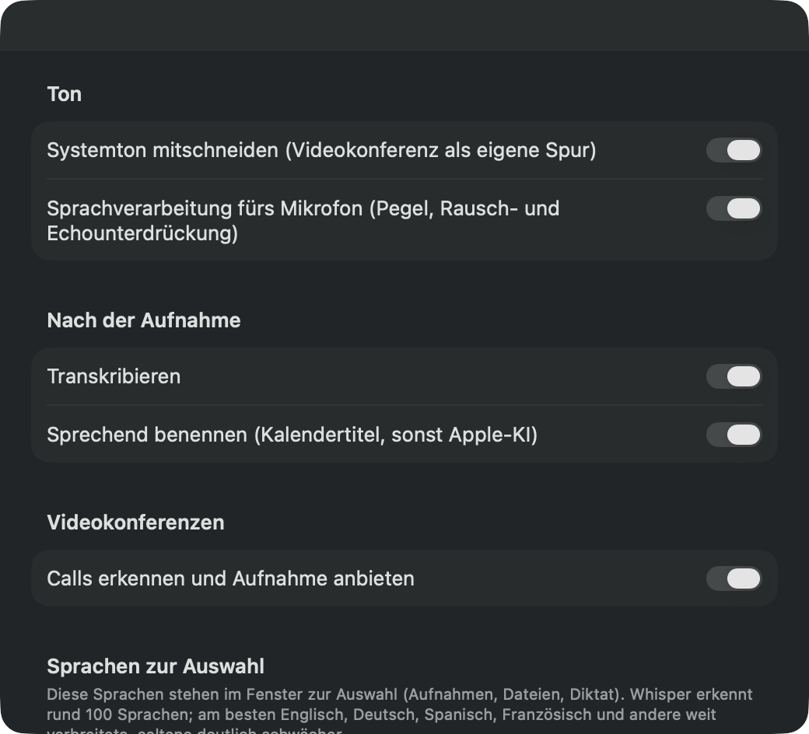
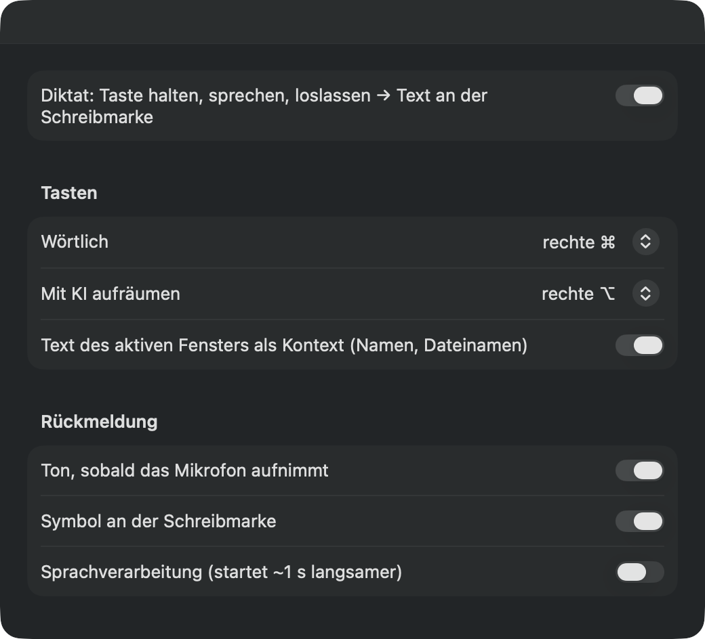
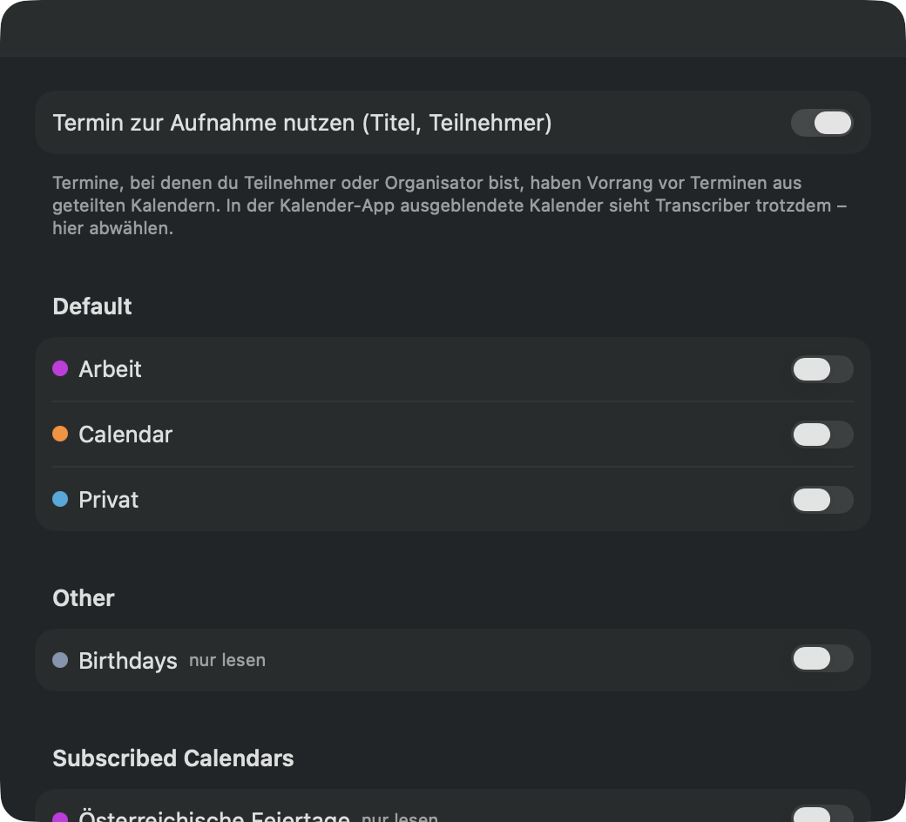

Alles lokal & privat
Aufnahme, Spracherkennung und Sprechererkennung laufen vollständig auf dem Mac. Keine Cloud, kein Konto, kein Abo, kein Lizenzserver. Audio verlässt den Rechner nie.
Meetings, Calls und Diktate – transkribiert auf deinem Mac. Ohne Cloud. Ein kleines, hilfreiches Werkzeug in der Menüleiste, das zuhört, mitschreibt und weiß, wer was gesagt hat.
curl -fsSL https://transcriber.teconomix.net/install.sh | bash
Version 0.8.1 · 23. Oktober 2026 · macOS 14 oder neuer
Aufnehmen, verschriftlichen, Sprecher zuordnen, diktieren – alles auf deinem Mac, nichts in fremden Rechenzentren.
Aufnahme, Spracherkennung und Sprechererkennung laufen vollständig auf dem Mac. Keine Cloud, kein Konto, kein Abo, kein Lizenzserver. Audio verlässt den Rechner nie.
Ein Klick in der Menüleiste. Mikrofon und Systemton – also die anderen im Call – landen als getrennte Spuren.
Transkribiert wird mit Whisper large-v3-turbo auf der Apple-Silicon-GPU: eine Stunde Audio samt Sprechererkennung in rund drei bis vier Minuten.
Sprechererkennung (pyannote) mit lernender Stimmdatenbank: einmal benannt, beim nächsten Mal erkannt. Unsichere Zuordnungen sind mit „(?)“ markiert. Personenzahl vorgeben oder nachträglich neu trennen, Stimmen im Team weitergeben.
Erkennt Teams, Zoom, Google Meet & Co. und fragt: „Aufnehmen?“ Die Aufnahme nimmt das Mikrofon, das der Call benutzt – auch wenn du es mittendrin wechselst – und endet automatisch mit dem Call. Deine Stimme und die der anderen werden über getrennte Spuren auseinandergehalten – im Test auch mit Lautsprecher-Echo.
Der laufende Termin wird zum Dateinamen, seine Teilnehmer werden beim Benennen der Stimmen vorgeschlagen.
Rechte ⌘ halten, sprechen, loslassen: Der Text steht an der Schreibmarke – in Mail, Slack, Browser oder Terminal. 10 Sekunden Diktat in rund 0,2 s.
Mit der rechten ⌥ räumt Apple Intelligence (lokal) Füllwörter und Satzzeichen auf.
Aus dem Kalender oder per lokaler KI:
2026-10-10 14-03 Budgetplanung Q4Ordner-Wächter (optional): Dateien in ~/Transcriber werden automatisch transkribiert. Ausgabe als Text (oder Markdown), JSON und SRT, Glossar für Namen und Fachbegriffe, Kommandozeile und MCP-Server für KI-Agenten wie Claude.
Mit dem Plugin Local Transcriber für Obsidian wird jede Aufnahme zur Notiz in deiner Vault – mit Datum, Termin, den Teilnehmenden als Links auf deine Personen-Notizen und dem Transkript. Sprecher benennst du direkt in Obsidian, Audiodateien aus der Vault lassen sich per Rechtsklick transkribieren. Was du selbst schreibst oder korrigierst, bleibt unangetastet.
Das Plugin ist für das Plugin-Verzeichnis von Obsidian eingereicht. Bis es dort steht: Installation von Hand oder mit BRAT – Anleitung auf GitHub.
In drei Schritten von der Installation zum ersten Transkript.
Ein Befehl im Terminal – der Installer erledigt den Rest.
Mikrofon und Systemaudio. Optional: Bedienungshilfen fürs Diktat und Zugriff auf den Kalender.
Klick in der Menüleiste oder rechte ⌘ halten. Das Transkript liegt kurz darauf neben der Aufnahme.
Wenige, verständliche Schalter – wie man es von einer Mac-App erwartet.



Ein Befehl, rund zehn Minuten Geduld – danach läuft alles offline.
curl -fsSL https://transcriber.teconomix.net/install.sh | bash
~/Transcriber überwachen soll: j für ja, nur ↩ für nein.
Transcriber 0.8.1 – Installation ▸ Voraussetzungen prüfen ✓ macOS 15.6, Apple Silicon, 212 GB frei ▸ Transcriber 0.8.1 laden ✓ Prüfsummen stimmen ▸ Python-Umgebung einrichten (uv, Python 3.12, Pakete – dauert ein paar Minuten) ✓ Python-Umgebung bereit ▸ ffmpeg ✓ ffmpeg installiert (statischer Build) ▸ Modelle ✓ Sprechererkennung (pyannote community-1, CC-BY-4.0) ▸ Spracherkennungsmodell laden (Whisper large-v3-turbo, ~3 GB – kann dauern) ✓ Whisper large-v3-turbo ▸ App installieren ✓ ~/Applications/Transcriber.app Ordner ~/Transcriber überwachen (abgelegte Audiodateien automatisch transkribieren)? [j/N] Fertig. Transcriber 0.8.1 ist installiert.
Lieber mit Homebrew? Dasselbe in einem Befehl, Updates dann mit brew upgrade:
brew install --cask teconomix/tap/local-transcriber
Hinweis zu Gatekeeper: Die App ist (noch) nicht von Apple notarisiert. Der Installer richtet sie so ein, dass sie trotzdem startet.
Deinstallieren: bash ~/.local/share/transcriber/uninstall.sh (mit Homebrew: brew uninstall local-transcriber). Aufnahmen und Transkripte bleiben erhalten.
Hängt etwas? Frag in den Diskussionen auf GitHub – dort helfen auch andere Nutzer.
Nein. Transcriber ist Open Source unter der MIT-Lizenz und kostenlos – ohne Konto, ohne Abo, ohne Werbung.
Nur für die Installation. Danach funktioniert alles offline; Aufnahmen und Transkripte bleiben auf deinem Mac. Auf Wunsch fragt die App einmal täglich die aktuelle Versionsnummer ab, um auf Updates hinzuweisen – sonst nichts.
Rund 100 – alle, die das Spracherkennungsmodell Whisper kennt. Voreingestellt sind Deutsch, Englisch, Spanisch und Französisch; weitere wählst du in den Einstellungen dazu. Am besten klappen weit verbreitete Sprachen, seltene deutlich schwächer.
Dafür bist du selbst verantwortlich: Hol die Einwilligung aller Beteiligten ein, bevor du aufnimmst – je nach Land ist das gesetzlich vorgeschrieben.
In den Diskussionen auf GitHub: Fragen stellen, Ideen vorschlagen, zeigen, wofür du Transcriber nutzt. Fehler meldest du am einfachsten direkt in der App über das Käfer-Symbol im Panel.